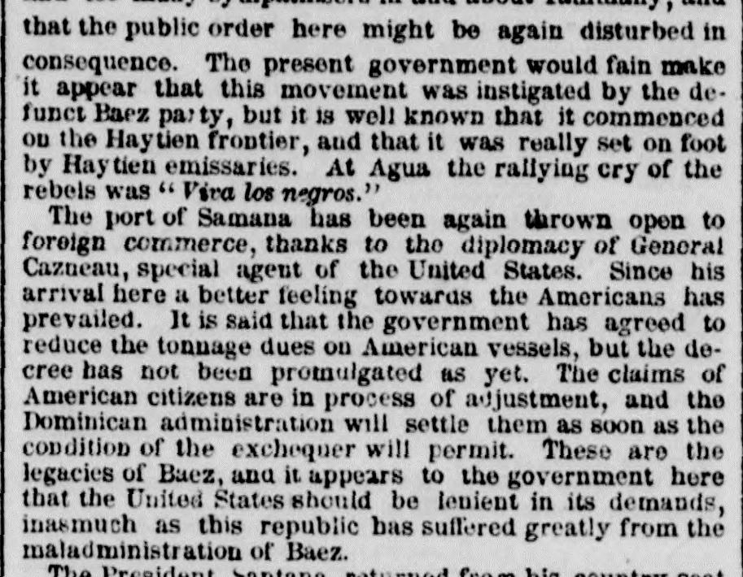
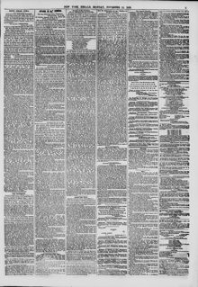

These aro the legacies of Baez, anu ii appears to thoEstos son los legados de Baez, y parece que el
The New York Herald. New York [N.Y.], November 14, 1859. Page 5. View the originalVer el original


See the full pageVer la página completaThe newspaper reported that claims by American citizens were awaiting settlement as the Dominican administration awaited improved financial conditions following the maladministration of Baez. It also noted that President Santana had returned from Leybo on the 12th ult. in renewed health, heavy rains had damaged corn and rice crops, and Vice President General Abel Alfau had arrived from Azua on the 16th inst. after quelling a pro-Haiti revolution.El periódico informó que las reclamaciones de ciudadanos estadounidenses estaban pendientes de liquidación mientras la administración dominicana aguardaba a que mejoraran las condiciones financieras tras la mala administración de Báez. También señaló que el presidente Santana había regresado de El Seibo el 12 del mes pasado con la salud restablecida, que las intensas lluvias habían dañado las cosechas de maíz y arroz, y que el vicepresidente, general Abel Alfau, había llegado de Azua el 16 del mes corriente tras sofocar una revolución prohaitiana.
FULL TEXT:TEXTO COMPLETO:
that the public order here might be again disturbed in consequence. The present government would fain make it appear that this movement was instigated by the defunct Baez party, but it is well known that it commenced on the Haytien frontier, and that it was really set on foot by Haytien emissaries. At Agua the rallying cry of the rebels was “Viva los negros.”que el orden público aquí podría ser de nuevo perturbado en consecuencia. El gobierno presente querría hacer parecer que este movimiento fue instigado por el difunto partido de Báez, pero es bien conocido que comenzó en la frontera haitiana, y que fue realmente puesto en marcha por emisarios haitianos. En Agua el grito de reunión de los rebeldes fue «Viva los negros».
The port of Samana has been again thrown open to foreign commerce, thanks to the diplomacy of General Cazneau, special agent of the United States. Since his arrival here a better feeling towards the Americans has prevailed. It is said that the government has agreed to reduce the tonnage dues on American vessels, but the decree has not been promulgated as yet. The claims of American citizens are in process of adjustment, and the Dominican administration will settle them as soon as the condition of the exchequer will permit. These are the legacies of Baez, and it appears to the government here that the United States should be lenient in its demands, inasmuch as this republic has suffered greatly from the maladministration of Baez.El puerto de Samaná ha sido de nuevo abierto al comercio extranjero, gracias a la diplomacia del General Cazneau, agente especial de los Estados Unidos. Desde su llegada aquí un mejor sentimiento hacia los estadounidenses ha prevalecido. Se dice que el gobierno ha acordado reducir los derechos de tonelaje en los buques estadounidenses, pero el decreto no ha sido promulgado todavía. Las reclamaciones de ciudadanos estadounidenses están en proceso de ajuste, y la administración dominicana las resolverá tan pronto como la condición del erario lo permita. Estos son los legados de Báez, y parece al gobierno aquí que los Estados Unidos deberían ser indulgentes en sus demandas, ya que esta república ha sufrido grandemente de la mala administración de Báez.
The President, Santana, returned from his country seatEl Presidente, Santana, regresó de su casa de campo